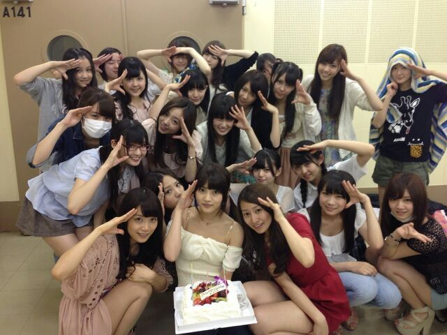

ハッロ☆！！
Rottyだよ〜(*^^*)
blogに書くの２日
遅れちゃってごめんねっ //
・・・・・・・・
若月っ ☆ !!!
お誕生日 おめでとぉ〜う ))))

皆で 写真とりましたあ〜 ,
ゆみ☆ 真ん中でおっきな
ケーキもってる (^ω^)
ゆみ☆がもう19歳だなんてっ、、
おっとなぁ〜ん.
いやぁ〜ん (*´∀｀)ノ
頼りになる １つ上の
姉ちゃんだよ ゆみはっ )))
ゆみっ blog見てるかなあ？
幸せな19歳にしてね(´▽`)
まひろももう少しで18なんだけど
新しい歳、
なんか いい思い出いっぱい
作っていきたいなん(〃▽〃)/
この前、ラジオ収録の時
「ろってぃ−は自分にストイックだよね！！」って言ってくれたの...
嬉しかった。ありがとっ♪
でも まひろはね
ゆみこそ 自分にストイックだよ\(*´▽`*)/
って思うよ？
そんなゆみを見習うし
大好きだよ？
あっ、なんかこっ恥ずかしい！！
いつもありがとう(〃ゞ〃)
これからもよろちくね♪
ぴょん！！！
っと話しかわりまして、、、
★私たちのニューシングル
「ガールズルール」が少し前からやけど先行配信スタートしてます！
告知するの、ちょい遅かったあ？
ぃゃぃゃ、んなことないはず＼(^^)／
レコチョクでは
携帯待受やサイン入り色紙を
プレゼントしています!!
わちゃくし
川村 まひろの待ち受けも
もらえるとゆ−ことで
ございまちゅぅ〜 ♪
私が書いた 色紙ももらえちゃう
とゆ−ことでありやす ！
今回のPVも、
アイドルらしいフレッシュ感全快w☆
、、 って感じだけではなく
どこかちょっと 乃木坂感が
混じるPVに仕上がっています！
お楽しみにっ ))
あと、是非 歌詞等にも注目して
皆さんの好きな歌詞フレーズ等も
聞けたら嬉しいと思っています！！
詳しくは公式HPでみてね！
DLはこちら！
http://recochoku.jp/artist/30168093/
ではではっ
昨日の晩も
blog更新したばかりなどで
見てくれたら嬉しいです(^o^)v
今日は 土曜日ですね ！
いい天気だしっ、
今日もお仕事頑張ろってぃー☆
↑頑張ろってぃ−
なんか久々な感じする ^^
お互い 頑張ろうねぇ〜
のし☆★☆